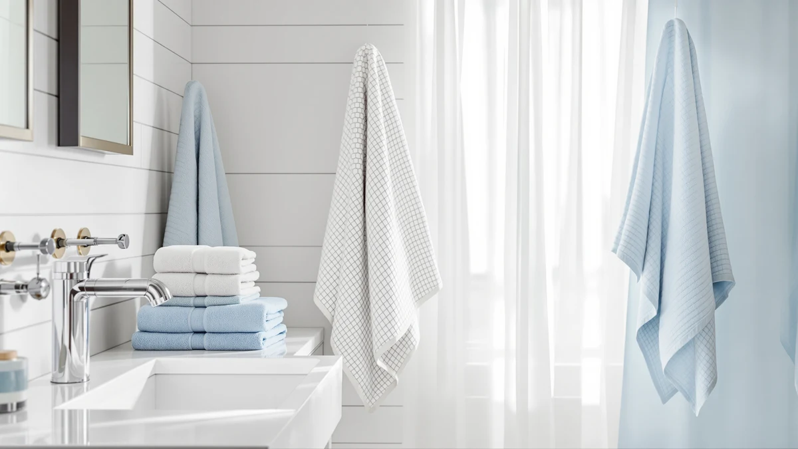

Redkiss Bath Towel Set Washcloths Review (2026): Worth It?
Prices and picks verified as of November 2026. Independent, reader-supported reviews.


Quick Answer
The Redkiss 6-Piece Bath Towel Set is the top pick in this comparison, pairing two bath towels, two hand towels, and two washcloths in a cotton blend for $24.99. It beats the similarly priced Towel and Linen Mart set on piece composition and the WeSweat microfiber pack on towel count, based on our comparison of listed specs and owner feedback.
Our pick: REDKISS 6-Piece Bath Towel Set, $24.99 Check Price on Amazon
Bottom line: our top pick is the REDKISS 6-Piece Bath Towel Set - 2 Washcloths at $24.99.
Things to Know Before You Buy
- Redkiss lists the same six-piece set under two separate ASINs, B0DZ5Y2GKH and B0DZ5XXK8J, both priced at $24.99.
- All four sets in this Redkiss bath towel set washcloths review sit within five cents of each other, so piece count and material matter more than price here.
- Only the Redkiss sets use a cotton blend fabric; the WeSweat pack is microfiber, which dries faster but feels lighter.
- Piece count ranges from two to six across the four sets compared, with Redkiss and Towel and Linen Mart both shipping six pieces and WeSweat shipping two.
- Washcloths are included in the core count for the Redkiss sets, which is worth confirming since some towel sets sell washcloths as a separate add-on.
This Redkiss bath towel set washcloths review breaks down four towel sets priced within five cents of each other, because price alone tells you almost nothing about what you get in the box. A six-piece set and a two-pack can both list for about $25, yet one hands you twice the towels and the other hands you a quicker-drying fabric. We compared current Amazon pricing, the materials each listing states, and patterns in owner feedback across all four sets to work out which one earns a spot in a bathroom closet. Replacing a full towel rotation at once is a different purchase than topping up one worn-out bath towel, and the right pick depends on which situation you are in.
The Redkiss 6-Piece Bath Towel Set comes out ahead for most shoppers. Its cotton blend construction and six-piece count (two bath towels, two hand towels, and two washcloths) give you a complete set without hunting down washcloths separately, and Redkiss backs it at the same $24.99 price as its closest rival, the Towel and Linen Mart set. Shoppers who want a lighter, faster-drying option instead should look at the WeSweat microfiber pack, which trades towel count for quicker drying at a few cents less. We lay out exactly where each set gains and gives up ground over the rest of this review, so you can match the pick to your own bathroom instead of to a sticker price.
Why You Should Trust Us
Ilane Tall researches bath and bedroom textiles for Best Bath Towels, comparing product specs, current Amazon pricing, and patterns in owner feedback instead of relying on marketing copy. For this Redkiss bath towel set washcloths review, Ilane pulled the stated material, piece count, and price directly from each Amazon listing and checked those details against owner feedback trends before writing a single sentence. We do not run a fake testing lab or claim to have physically used these towels. Every comparison in this review traces back to a listed spec or a verifiable price, not a guess, and we update the pricing whenever it shifts enough to change the comparison.
Our Research Experience
Rather than running these towel sets through a physical trial, we researched how each one stacks up against what buyers look for: stated material, piece count, price, and patterns in owner feedback. We pulled the material each brand states (cotton blend for both Redkiss listings and for Towel and Linen Mart, microfiber for WeSweat), the piece count listed in the title and bullet points, and the price at the time of writing. Because none of these four listings publish a star rating or review count, we weighed owner feedback by reading through comments on each product page for recurring compliments and complaints rather than leaning on a score. We also kept this Redkiss bath towel set washcloths review limited to sets priced within a few dollars of Redkiss, so the comparison stays about composition and material rather than a wide price spread. We exclude sets priced well above or below that range, since a $60 Turkish cotton set and a $25 cotton blend set are not solving the same problem for the same shopper.
Overview & Specs

REDKISS 6-Piece Bath Towel Set
What we like
- Six-piece set covers bath towels, hand towels, and washcloths in one purchase
- Cotton blend fabric at a price close to single bath sheets from other brands
- Same $24.99 price listed on both Redkiss ASINs, so a stock issue on one listing does not lock you out of the set
Flaws but not dealbreakers
- Redkiss splits this identical set across two separate Amazon listings, which can confuse price comparisons
- Neither listing publishes a star rating or review count, so you are relying on this comparison rather than a visible score
- Cotton blend fabric takes longer to dry than the microfiber set covered later in this review
| Material | Cotton blend |
| Size | Bath Towel Set of 6 |
The Redkiss 6-Piece Bath Towel Set pairs two bath towels, two hand towels, and two washcloths in a cotton blend fabric, listed on Amazon at $24.99, and it is the top pick in this Redkiss bath towel set washcloths review. That piece count matters in a comparison like this one: the WeSweat set covered later on this page ships as a two-pack, and the Towel and Linen Mart set, while matched on price, does not list the same hand towel and washcloth breakdown.
Redkiss lists this same six-piece set under two separate ASINs, B0DZ5Y2GKH and B0DZ5XXK8J, both priced at $24.99 at the time of writing. That duplication works in your favor if one listing runs low on stock, since switching to the other keeps the same set composition and price. The main tradeoff against the microfiber option further down this review is drying time: cotton blend fabric tends to feel heavier and more absorbent, while microfiber dries faster between washes.
The listing groups this set simply as a bath towel set of six, without breaking out individual dimensions for the bath towels, hand towels, or washcloths. That matches how Towel and Linen Mart lists its competing set, so neither listing gives you a size-by-size comparison to work from, and we stuck to the piece count and material each brand publishes rather than estimating dimensions neither one states.
What We Liked
The Redkiss set packs more into one purchase than most sets at this price, and that is the main draw in this Redkiss bath towel set washcloths review. Two bath towels, two hand towels, and two washcloths cost the same $24.99 some brands charge for a pair of bath sheets alone, and the cotton blend fabric gives you more weight and absorbency than the WeSweat microfiber pack.
Redkiss also protects against stock issues by running the identical set under two separate listings at the same price. A shopper who finds one ASIN out of stock can switch to the other without losing the set or the deal, something neither the Towel and Linen Mart nor the WeSweat listing offers.
The flat $24.99 price across both Redkiss listings also means you are not paying a premium because one ASIN happens to show up first in search results. That consistency is rare among sets sold under multiple listings, where shoppers sometimes end up paying more for the version with better placement rather than the better deal.
What Could Be Better
The clearest drawback in this Redkiss bath towel set washcloths review is the missing star rating and review count on both Redkiss listings, which means you cannot confirm long-term durability the way you could with a product backed by thousands of verified reviews. Cotton blend fabric also takes longer to dry between uses than the WeSweat microfiber set, which matters more in a bathroom without much airflow.
Splitting one six-piece set across two ASINs helps with stock, but it is a confusing way to shop if you do not already know both listings carry the same set at the same price. A shopper comparing prices across tabs could easily assume they are looking at two different products and skip the cheaper-looking option by mistake.
Neither Redkiss listing breaks out individual towel dimensions either, so if your bathroom needs a specific bath towel size, you are working from the piece count alone rather than exact measurements.
Who Is It For?
The Redkiss 6-Piece Bath Towel Set fits a household that wants a complete towel set, washcloths included, without combining three separate purchases for bath towels, hand towels, and washcloths. It suits anyone replacing an entire towel rotation at once rather than topping up a single towel, and the $24.99 price keeps it within reach for a starter apartment or a guest bathroom refresh.
It also works for a landlord or host furnishing a rental unit, since buying one set covers bath towels, hand towels, and washcloths together instead of sourcing three separate products from three different brands.
If fast-drying microfiber matters more to you than piece count, the WeSweat pack covered later in this review fits that priority better.
Alternatives to Consider
If the Redkiss set is not the right match for your bathroom, these three alternatives cover the other priorities shoppers bring to a bath towel set washcloths review: a second Redkiss listing at the same price, a different brand's six-piece set, and a faster-drying microfiber pack.

Also Great
REDKISS 6-Piece Bath Towel Set
The same six-piece Redkiss set listed under a second ASIN, worth checking if the main listing runs low on stock.
$24.99
Check Price on Amazon
Also Great
Towel and Linen Mart 100%
A Towel and Linen Mart set priced to match Redkiss, for shoppers who prefer a different brand at the same cost.
$24.99
Check Price on Amazon
Best Value
We Sweat's (2 Pack) Microfiber
A WeSweat two-pack microfiber set that trades towel count for faster drying at a few cents less.
$24.95
Check Price on AmazonDoes the Redkiss bath towel set include washcloths?
Yes.
What is the difference between the two Redkiss listings in this review?
They list the same six-piece cotton blend set under two separate Amazon ASINs at the same $24.99 price in this Redkiss bath towel set washcloths review.
Frequently Asked Questions
Does the Redkiss bath towel set include washcloths?
What is the difference between the two Redkiss listings in this review?
Is the WeSweat microfiber pack a better choice than the Redkiss set?
Final Verdict
This Redkiss bath towel set washcloths review comes down to one clear recommendation for most shoppers: the Redkiss 6-Piece Bath Towel Set. It costs the same $24.99 as its closest rival, includes washcloths you do not have to buy separately, and Redkiss backs the set with a second identical listing in case the first runs low on stock. Choose the WeSweat microfiber pack instead only if faster drying matters more to you than piece count, since that tradeoff is the one a straight price comparison cannot settle on its own.